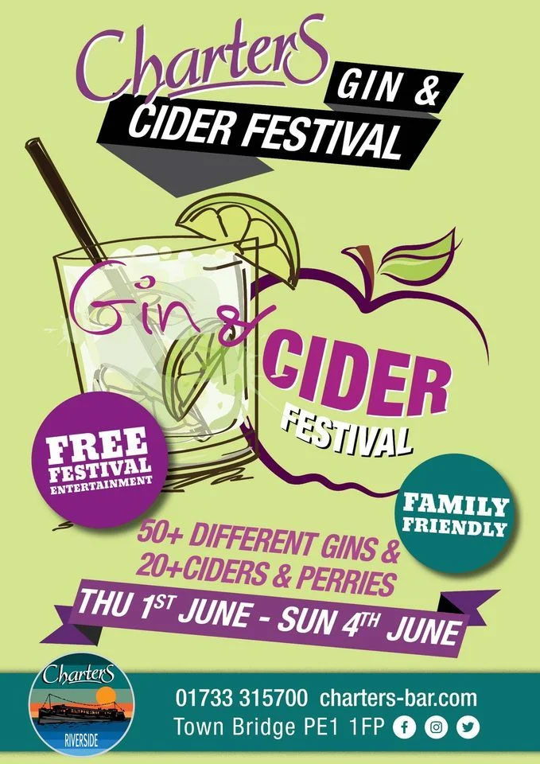

What's On in Peterborough
Peterborough has a lot going on: everything from sewing lessons to ghost walks, art exhibitions to science fiction cos-play. Here's a small selection of upcoming events: have fun!
Sister Act The Musical at Peterborough Cathedral
Location: Peterborough Cathedral
Dates: Wednesday 31st May 2023 at 19.30, Thursday 1st June 2023 at 14.30 and 19.30, Friday 2nd June 2023 at 14.30 and 19.30, Saturday 3rd June 2023 at 14.30 and 19.30
Fees: Adults £21.50, Concessions £19.50 (booking fees apply).
Accessibility: Wheelchair access, crowded, loud, bright flashing lights.
You will follow nightclub singer Deloris Van Cartier as she is placed in protective custody in the one place she is sure to be safe… a convent! Whilst finding herself at odds with the strict Mother Superior, she uses her singing talents to uplift the choir and inspire her sisters. Bringing new life into the church, will she take it too far and blow her cover?
Sister Act is a stirring and joyful musical based on the 1992 film of the same name. With music from eight-time Tony and Oscar winner Alan Menken (Newsies, Beauty and The Beast), Sister Act was nominated for five Tony Awards, including best musical.
You'll be dancing in the pews!
Charters Annual Gin & Cider Festival
Location: Charters (a floating Dutch barge at Town Bridge, Peterborough PE1 1FP), a short walk from the City Centre.
Dates: Thursday 1st June 2023 to Sunday 4th June 2023
Fees: Free entrance. Drinks: ££ - £££
Accessibility: No wheelchair access , may cause difficulty for visitors with mobility issues (it's a boat), crowded, loud, bright lights at night.
Charters are delighted to be holding their Annual Cider & Gin Festival.
The festival will showcase 20+ Real Ciders and Perries and 30+ Gins. Might be best not to drive... but if you are, you can always buy some to take home with you
REMEMBER: Don't drink and drive!
Social Media: